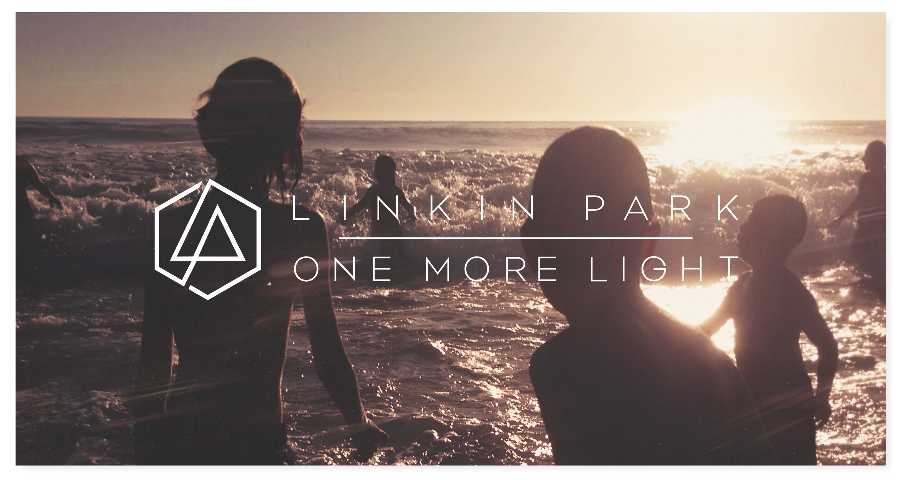
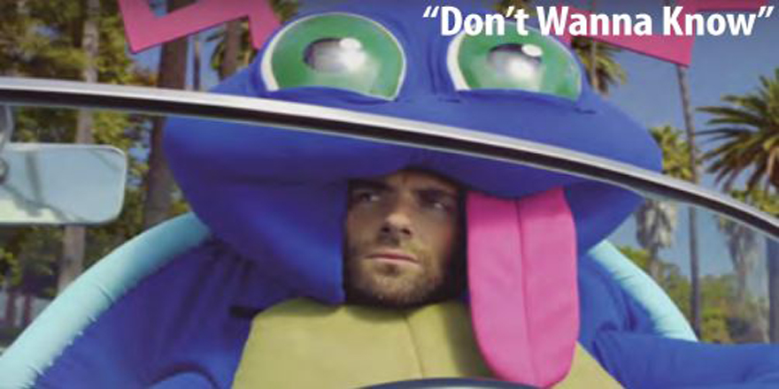

17/04/2018 por Flaresstorm
Ni siquiera ha terminado el segundo mes del 2017, y seguimos siendo bombardeados con tantos anuncios de nuevos discos, regresos a los escenarios y conciertos. En este gran año para la música que promete mantener nuestras carteras vacías y oídos ocupados, Linkin Park no podía quedarse atrás.
Tal vez ya ni se acuerden de ellos, pero la banda estadounidense se encontraba de descanso de la gira de The Haunting Party (su último material) y aprovecharon para planear la nueva etapa, que finalmente fue anunciada hoy con el nombre One More Light. Su séptimo disco llegará a partir del 19 de mayo en diversas opciones de formato físico, y contenido digital.

17/04/2018 por Flaresstorm
Hace unos días Maroon 5 lanzaba Don't Wanna Know, un tema pop con toques caribeños que tanto han explotado artistas como Major Lazer, Justin Bieber o Sia. Y si ya llegaban un poco tarde a la moda tropical también llegan tarde al fenómeno Pokémon Go, parodiándolo en su videoclip.
Aunque a favor de la banda tenemos que decir que es divertido, parodiando a los jugadores que hacen locuras para cazar Pokémon en sitios privados; y bastante diferente a sus habituales videoclips donde Adam Levine es absoluto protagonista.
En el vídeo aparecen otros personajes conocidos como la humorista Sarah Silverman, que interpreta a la Pokémon ex novia de Levine, a la que trata olvidar recurriendo a los excesos de fiesta, alcohol y chicas, todo con su traje de criatura salvaje.
17/04/2018 por Flaresstorm
Su nombre real es Ilonka Antonia Obilinovic Martínez. Nació el 8 de julio de 1991 en Antofagasta, segunda región en el norte de Chile.
Su canal es principalmente de fandubs (versiones en español de temas de apertura de animes y canciones de grupos asiáticos. También ha subido un par de vlogs.
También suele a ir a eventos, tanto como en su país como en otros de Latinoamérica.
Inició en YouTube en el año 2008 con su primer canal llamado "Midnight !",pero por derechos de autor tiempo después creo el canal de "MyDearGee" como una cuenta de respaldo (2011),actualmente esta en el canal de "Ilonqueen".
En el año 2012 se fue a Corea del Sur, ya que ganó un concurso.
Actualmente es egresada de publicismo de la universidad Diego Portales. Se mudó a México